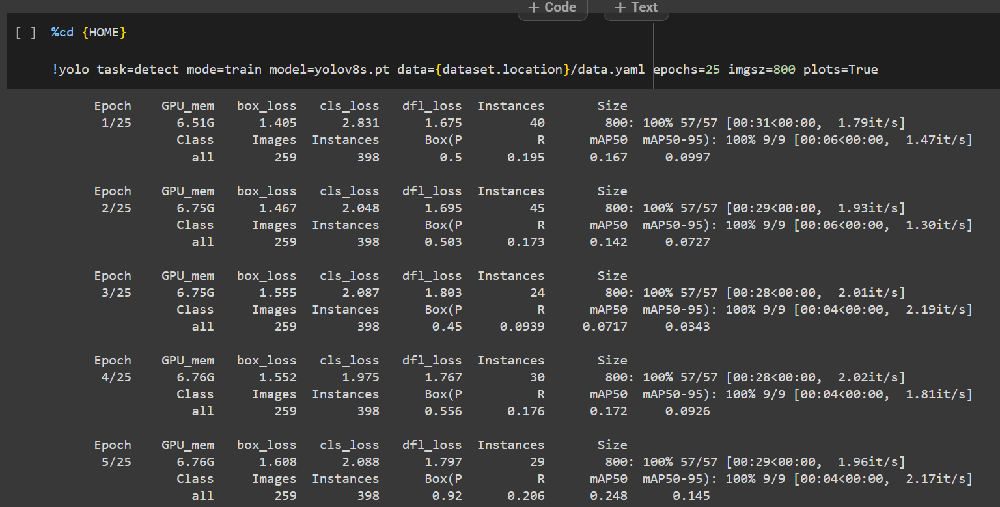

Ocean Plastic Object
Detection Model YOLO V8
How It Works
Step 1
The AI takes an image - in this case, the image features a turtle swimming by himself in clear ocean with plastic pieces around him

Step 2
The image is now processing through AI to identify pieces of plastic. The AI is trained with thousands of pictures to learn what a plastic look like.
Step 3
The picture is now returned with bounding boxes around identified pieces of plastic. Each box is labelled with a number from 0 to 1, showing the confidence level of the AI's Identification

Step 4
The software also works on moving video. In the future, this could be used in an Autonomous Underwater Vehicle (AUV). The AUV could be able to detect and collect the plastic, helping clean up trash in the ocean.